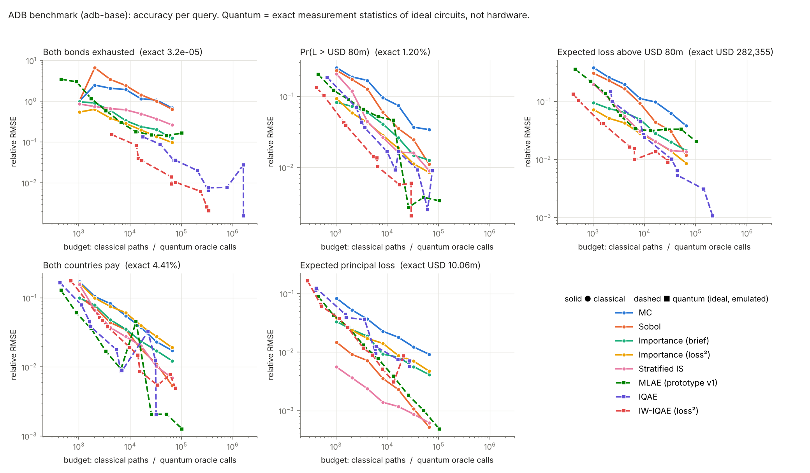
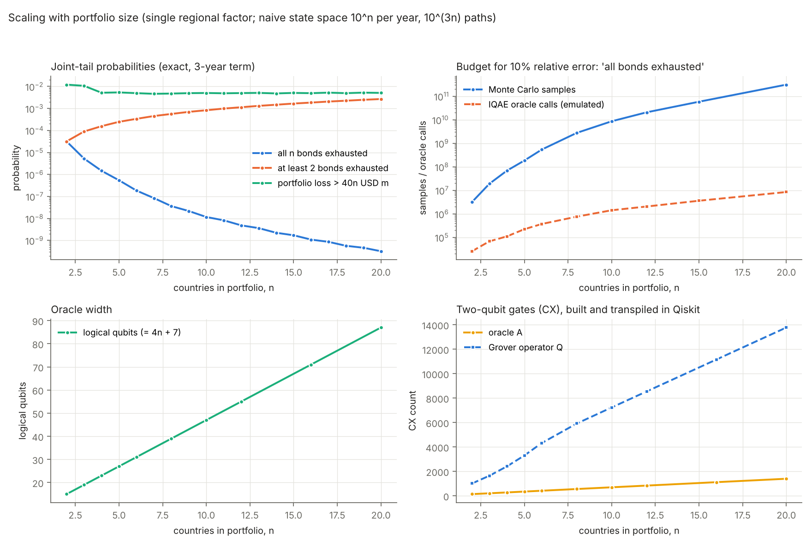

Summary. The probability that disaster losses co-move across borders decides whether pooling risk reduces cost and whether parametric triggers pay when real losses occur. For ADB's Kyrgyz Republic and Tajikistan Disaster Relief Bond benchmark, the hardest quantity is the rare joint tail: both bonds exhausted within the three-year term, with probability 3.2 × 10−5. Plain Monte Carlo and quasi-Monte Carlo return mostly zeros at practical budgets.
We combine Iterative Quantum Amplitude Estimation (IQAE) with an importance-weighted amplitude encoding that is exactly unbiased by construction, and we build the corresponding state-preparation oracles gate by gate in Qiskit, verified against the exact model on all 106 three-year paths. At equal query budget, ideal importance-weighted IQAE estimates the rare joint tail with 1.3–1.8% relative RMSE in all five benchmark scenarios, against 7–15% for the best classical baseline. That is 4–9× more accurate per query. We also report where strong classical methods still win (expected loss), and what fault-tolerant hardware the quantum method would need.
Catastrophe bonds and parametric insurance move disaster losses from governments to capital markets before a disaster happens. Their pricing and reliability rest on catastrophe models that estimate how often extreme events occur, how severe they are, and where they hit. Two problems persist. Only a couple of decades of high-quality disaster data exist, and the dependence between perils across countries is poorly constrained by history. The joint tail, meaning how extreme events co-move across borders, determines whether pooling risk across countries reduces cost and whether parametric triggers pay out when real losses occur [ADB brief]. It cannot be estimated from history alone, so it must be computed from a model. At a fixed computational budget, the accuracy of that computation is the bottleneck.
The challenge benchmark models two US$80m bonds (Kyrgyz Republic, Tajikistan) over a three-year term. Each is split into a US$70m earthquake sub-limit, paying in quarter steps, and a US$10m precipitation sub-limit, paying at most once per term. Earthquake payouts follow a compound-Poisson process with shared events between the countries (shared rate c = 0.0029667 per year in the base case). Precipitation triggers are Poisson with a common component. An annual state (a, b, r1, r2) takes 100 values. Three independent years are added and capped at (4, 4, 1, 1), giving five focus targets under five scenarios. Our exact reference implementation (jointloss/model.py) reproduces every intermediate value of the brief: the Table 2 rates, c, the 92.62% and 89.40% no-payout probabilities, and the precipitation split. It also reproduces all 25 values of the brief's Table 6.
| Target | Definition | Exact value | Character |
|---|---|---|---|
| Expected principal loss | E[L] | US$10.06m | smooth, common |
| Joint attachment | Pr(L1 > 0 and L2 > 0) | 4.414% | joint, moderate |
| Portfolio exceedance | Pr(L > US$80m) | 1.205% | tail |
| Stop-loss | E[max(L − 80m, 0)] | US$282,355 | tail, expectation |
| Both bonds exhausted | Pr(L1 = L2 = 80m) | 0.0032% | rare joint tail |
Exact enumeration takes about 0.2 ms for two countries, so runtime is not the issue at this size. The issue is accuracy on the rare joint tail at a fixed budget, and how that grows with portfolio size. With two perils on the ADB grid the annual state space is 10n for n countries, so exact enumeration soon becomes impractical while the joint-tail probability shrinks. The Monte Carlo error at budget N falls as 1/√N, so its relative error on a probability a scales as 1/√(Na). At a = 3.2 × 10−5, Monte Carlo and scrambled Sobol still show 60–70% relative RMSE at 65,536 paths. Importance sampling is the strongest of the brief's baselines at about 12%.
Every target has the form μ = Ep[f(X)] with X a three-year path and f scaled into [0, 1] (Eq. 1 of the brief). A state-preparation oracle prepares
A|0⟩ = Σx √p(x) |x⟩ ( √(1−f(x)) |0⟩ + √f(x) |1⟩ ), a = sin2θ = Ep[f] (1)
The Grover operator Q = −A S0A†Sχ rotates by 2θ. Measuring the objective qubit after QkA|0⟩ returns 1 with probability sin2((2k+1)θ). Amplitude estimation [Brassard et al. 2002; Montanaro 2015] reaches additive error ε with O(1/ε) applications of A, against O(1/ε2) samples for Monte Carlo. For a small target, the relative error per query scales as
relative errorQAE ∼ 1 / (M√a) versus relative errorMC ∼ 1 / √(N a) (2)
so the advantage is largest where a is tiny, which is exactly the rare joint tail. We count cost as applications of A: a shot at Grover power k costs 2k+1. This is a query-complexity comparison, not a wall-clock claim; Section 3 converts queries into gates.
Our first prototype used maximum-likelihood AE with a fixed exponential schedule. On the rare joint tail its RMSE plateaued near 15% from about 2.6 × 104 calls, because the likelihood occasionally locked onto a wrong mode. IQAE [Grinko et al. 2021] chooses each next power k so that the current confidence interval for θ stays within one half-period, and it pools shots at repeated powers. We stop on the half-width of the amplitude interval rather than the angle interval, so small amplitudes are not over-resolved. With Clopper–Pearson intervals at α = 0.05, empirical coverage is 0.95–1.00 in every cell we ran, and the error keeps falling: 3.6% at 8 × 104 calls and 2.0% at 2.0 × 105 calls on the rare tail.
Equation (2) says a rare target is expensive because a is small. Classical importance sampling addresses the same issue by sampling from a proposal q that over-weights damaging years. We transfer it into the oracle. The loader prepares √q(x) and the objective rotation encodes the reweighted payoff:
g(x) = f(x) w(x) / W, w(x) = Πy p(sy) / q(sy), W = maxx f(x)w(x), a′ = Eq[g] = a/W (3)
The estimator is â = W â′. If the proposal concentrates on the paths where f > 0, then W < 1, the encoded amplitude is boosted, and the relative error per query improves by √(1/W). We use the brief's own proposal (half true, half loss-tilted, per year) and a loss2-tilted variant. In the circuit, the log-weight Σy ln(p/q)(sy) is accumulated in a fixed-point register through a per-year lookup and an adder. The final rotation is a uniformly-controlled RY over that register and a tail flag.
| Proposal | Expected loss | Joint attachment | Pr(L>80m) | Stop-loss | Both exhausted |
|---|---|---|---|---|---|
| Brief's proposal (½ true + ½ loss-tilted) | 2.41× | 0.97× | 1.82× | 2.49× | 2.64× |
| Loss2-tilted (½ true + ½ loss2) | 1.53× | 0.54× | 2.13× | 3.98× | 3.99× |
A fixed-point register can only hold rounded log-weights. Rounding ln(p/q) per state biases the estimate by roughly 1–3% at resolution δ = 1/16, which is comparable to the accuracy we target. Instead of rounding the weights, we change the proposal so that its weights are exactly on the grid:
ℓ̂(s) = δ · round( ln(p(s)/q(s)) / δ ), qsnap(s) = p(s) e−ℓ̂(s) / Z (4)
Then ln(p/qsnap) = ℓ̂ + ln Z exactly, the register holds the true weight, and the estimator is unbiased for any δ (verified to 10−13 relative). qsnap is still a valid proposal and very close to q. A coarse grid (δ = 1/4, six register qubits) keeps the full gain in Table 2.
Two natural variants failed, and the reason shaped the design. Stratifying by which years pay gives QAE essentially no gain (≈1.0× on every target), although the same stratification reduces the classical standard deviation 2–3×. Weighting each year with its own ancilla, which avoids weight arithmetic, loses the gain (≤0.5×): the per-year normaliser is set by the zero-loss state, whose weight exceeds one. The underlying asymmetry is that QAE's cost depends on the worst-case weight W, whereas classical importance sampling depends on the second moment of the weights. Only path-level weights with a tight W give a real quantum gain. This also means variance-reduction tricks do not transfer to QAE automatically. Each must be checked through its effect on W.
Budgets. Classical: 210–216 sampled paths. Quantum: applications of A, with IQAE target precisions from 60% to 1% relative. Repetitions. 40 per classical cell and 200 per quantum cell; seed 2026. Quantum emulation. Quantum results are exact measurement statistics of ideal circuits: each shot is drawn from sin2((2k+1)θ) with the exact amplitude. That law is validated against an explicit 221×2 statevector simulation of QkA|0⟩ (maximum deviation 8.5 × 10−16 for the plain encoding and 1.3 × 10−15 for the weighted encoding). No hardware noise is included in the headline results.

| Scenario | Exact | Budget | IW-IQAE | Coverage | MC | Sobol | Importance | Stratified IS |
|---|---|---|---|---|---|---|---|---|
| adb-base | 3.2e−5 | 58,439 | 0.018 | 0.99 | 0.804 | 1.003 | 0.117 | 0.217 |
| adb-independent | 3.9e−6 | 222,714 | 0.017 | 1.00 | 1.084 | 1.440 | 0.149 | 0.296 |
| adb-common-shock | 4.4e−5 | 64,777 | 0.013 | 1.00 | 0.531 | 0.674 | 0.117 | 0.191 |
| adb-rain-stress | 6.9e−5 | 64,550 | 0.015 | 0.99 | 0.575 | 0.611 | 0.072 | 0.148 |
| adb-rain-cover | 3.2e−5 | 56,376 | 0.018 | 1.00 | 0.777 | 0.920 | 0.142 | 0.209 |
| Target | Budget | IW-IQAE | MC | Sobol | Importance | Stratified IS | Best classical |
|---|---|---|---|---|---|---|---|
| Both bonds exhausted | 58,439 | 0.018 | 0.804 | 1.003 | 0.117 | 0.217 | Importance, 6.5× worse |
| Stop-loss above US$80m | 6,553 | 0.019 | 0.125 | 0.138 | 0.053 | 0.039 | Stratified IS, 2.1× worse |
| Pr(L > US$80m) | 5,544 | 0.017 | 0.119 | 0.127 | 0.051 | 0.045 | Stratified IS, 2.6× worse |
| Joint attachment | 5,827 | 0.022 | 0.066 | 0.045 | 0.041 | 0.028 | Stratified IS, 1.3× worse |
| Expected principal loss | 1,549 | 0.022 | 0.054 | 0.015 | 0.029 | 0.005 | Stratified IS, 4.4× better |
The model generalises exactly. Caps commute with sums: for non-negative steps, min(min(x,4) + y, 4) = min(x + y, 4). So each bond's capped three-year quake total is min(own + shared, 4). Here "own" is compound Poisson over the term at rate 3(Λi − c), and "shared" is the sum of K ~ Poisson(3c) independent size draws. The brief's precipitation law is exactly an own rate plus a shared rate. Conditional on one regional factor (K, shared-rain indicator), the countries are independent. This is the latent-factor structure of Egger et al. (2021), which the brief names as the closest analogue. At n = 2 the generalised model reproduces all five targets in all five scenarios to 5×10−14 relative. For larger n, synthetic portfolios clone the Kyrgyz and Tajik parameters alternately (jointloss/scaling.py, run_scaling.py).
The quantum oracle grows linearly. Only term totals enter the targets, so the oracle loads the term law directly. It has a latent register (3 qubits for K ≤ 4, 1 shared-rain qubit), then for each country a K-multiplexed 3-qubit loader and an own-rain qubit, and finally a multi-controlled payoff. Built and transpiled in Qiskit, and verified by full statevector simulation at n = 2 and 3 (agreement to 10−13), it uses exactly 4n + 7 qubits and 70.0n + 0.6 CX (largest residual 1.5). At n = 2 this is 142 CX, against 850 for the annual-level oracle of Section 3.
| n | Annual states | a = P(all exhausted) | MC samples | IQAE calls | MC / IQAE | Qubits | CX(A) | CX(Q) |
|---|---|---|---|---|---|---|---|---|
| 2 | 102 | 3.16e−5 | 3.2e6 | 2.6e4 | 123× | 15 | 142 | 1,012 |
| 3 | 103 | 5.25e−6 | 1.9e7 | 6.8e4 | 280× | 19 | 210 | 1,648 |
| 5 | 105 | 5.42e−7 | 1.8e8 | 2.2e5 | 829× | 27 | 350 | 3,304 |
| 8 | 108 | 3.62e−8 | 2.8e9 | 7.6e5 | 3,645× | 39 | 560 | 5,918 |
| 10 | 1010 | 1.16e−8 | 8.6e9 | 1.4e6 | 6,067× | 47 | 700 | 7,236 |
| 20 | 1020 | 3.22e−10 | 3.1e11 | 8.5e6 | 36,787× | 87 | 1,400 | 13,776 |

Rarer tails favour QAE. P(all bonds exhausted) falls from 3.2×10−5 at n = 2 to 3.2×10−10 at n = 20. Monte Carlo then needs 3.1×1011 samples for 10% error, against 8.5×106 IQAE oracle calls: about 37,000× fewer, and the gap widens as the tail gets rarer. The comparison depends on the target. P(at least two bonds exhausted) rises with n (3.2×10−5 to 2.7×10−3), so its ratio falls to about 12×. P(portfolio loss > 40n) plateaus near 0.5% instead of diversifying away, because one shared earthquake moves the whole portfolio. That is a quantitative case for joint-tail modelling in pooled products.
An honest boundary. For one regional factor, an exact classical conditional calculation is also polynomial. We use it as the ground truth that makes benchmarking at large n possible; it is not a quantum result. The quantum oracle exploits the same structure, so its cost grows linearly in n and in the number of latent-factor qubits. With many factors, heterogeneous pairwise links or data-driven copulas, exact classical calculation becomes exponential in the number of coupled factors and sampling is the remaining option. That is where QAE's 1/√a versus Monte Carlo's 1/a matters, because joint-tail amplitudes shrink with portfolio size. Importance weighting adds a further 2.6–4× on the rare tail at n = 2. Extending its weight bound to n countries, and tensor-network exact references for moderate-treewidth dependence, are Phase 2 work. One oracle circuit (k = 0) fits a near-term fidelity budget up to n ≈ 8, but Grover iterations do not, so the advantage remains a fault-tolerant proposition.
Plain oracle A. For each of three years: a 6-qubit loader for the joint quake state (a, b) and a 2-qubit loader for the precipitation pair (Qiskit StatePreparation). Then two 4-bit Cuccaro ripple-carry accumulators [Cuccaro et al. 2004] sum the quake quarter-steps (uncapped sum ≤ 12), OR gates combine the precipitation triggers, and cap flags gA = (SA ≥ 4) are taken from the two high bits. Finally, one uniformly-controlled RY on the objective qubit, controlled by eight qubits (cap flags, low sum bits, precipitation bits; 256 angles), encodes f. The same circuit serves all five targets; only the angles change.
Weighted oracle AIW (rare-tail target). It uses the grid-snapped proposal loader on the 8-qubit year register, plus a per-year lookup of the integer log-weight (5 output bits, computed then uncomputed) added into a 6-bit register with a Cuccaro adder. It reuses the same arithmetic. A tail flag (AND of four flags) and a uniformly-controlled RY over the 6-bit register and the flag (128 angles) complete it.
| Circuit | Logical qubits | CX | 1-qubit gates | Depth | CX depth |
|---|---|---|---|---|---|
| A, plain | 39 | 850 | 1,399 | 1,235 | 623 |
| Q, plain (Grover operator) | 39 | 6,494 | 9,987 | 10,915 | 4,993 |
| A, importance-weighted | 52 | 24,545 | 45,481 | 47,199 | 16,293 |
| Q, importance-weighted | 52 | 55,288 | 98,755 | 105,078 | 38,047 |
| A, plain, routed to IBM heavy-hex (57 qubits) | 39 | 2,293 | 1,399 | 1,903 | 1,233 |
Two observations guide Phase 2. Q costs 7.6× A because the 39-qubit zero-reflection is synthesised without ancillas; an ancilla-assisted multi-controlled Z should remove most of this. In the weighted oracle, the log-weight lookups are Qiskit multiplexers built from small-angle rotations, and they dominate its cost.
| Quantity | Plain IQAE | IW-IQAE (loss2 proposal) |
|---|---|---|
| Relative RMSE achieved | 2.0% | 1.4% |
| Oracle calls (applications of A) | 2.04 × 105 | 6.34 × 104 |
| Largest Grover power k | 1,331 | 334 |
| Shots | 100 per round | 100 per round |
| T-count per Q, as built | 4.1 × 104 | 2.6 × 106 |
| T-count total, as built | 4.2 × 109 | 8.2 × 1010 |
| T-count total with unary-iteration QROM (projection) | 4.2 × 109 | 4.1 × 109 |
| Surface-code distance; physical data qubits | 19; ≈ 28,000 | 21; ≈ 46,000 |
The lookup is the lever. Replacing the rotation-based lookups with a unary-iteration QROM [Babbush et al. 2018] costs 4(N−1) T gates per lookup with no rotations (N = 256). That brings IW-IQAE to 4.1 × 109 T at 1.4% error, against 4.2 × 109 T at 2.0% for plain QAE. The result is per-gate parity with higher accuracy, 3.2× fewer queries and a 4× shorter maximal coherent sequence. This figure is a projection; building it is the first Phase 2 milestone.
At a two-qubit error rate of 10−3, keeping the expected circuit fidelity above 0.5 allows about 690 CX gates. The plain A alone needs 850, so no Grover iteration of this oracle is feasible on current NISQ hardware. The advantage reported here is a fault-tolerant proposition, consistent with resource studies for derivative pricing [Chakrabarti et al. 2021]. For the small-k hardware demonstrations planned in Phase 2 (reduced instances, k ∈ {0, 1, 2}), we will use readout-error mitigation, zero-noise extrapolation on k, a noise-aware likelihood (the contrast-decay model already in our MLAE code, exp(−κ(2k+1))) or a noise-robust IQAE variant, and dynamical decoupling on idle qubits.
Routing the plain oracle onto IBM heavy-hex connectivity raises the CX count 2.7× (850 to 2,293). All-to-all connectivity is therefore preferred for near-term demonstrations: trapped ions, or neutral atoms with movable qubits. The fault-tolerant target is a surface-code machine (superconducting or neutral-atom) with magic-state distillation. Full layout and factory overheads will be computed with a dedicated estimator (Qualtran or Azure Quantum Resource Estimator) in Phase 2.
All Phase 1 results ran on a single CPU core: the classical baselines and IQAE emulation take a few minutes (run_benchmarks_v2.py), and circuit construction, verification and costing take about one minute (resources/build_circuits.py). Environment: Python 3.13, NumPy, SciPy, Qiskit 2.6.2, fixed seed 2026. In Phase 2 the QAI Ventures GPU credits will be used for GPU statevector and tensor-network simulation of reduced-but-nontrivial instances (30–40 qubits), noisy simulation of small-k circuits, and large-n classical references.
Phase 2 runs from 30 November 2026 to 22 January 2027, with final pitches on 25 January 2027. The plan moves from the verified two-country oracle to larger portfolios and realistic data, keeping a classical reference beside every quantum result.
| Weeks | Work | Output and success criterion |
|---|---|---|
| 1–2 30 Nov – 13 Dec | Build unary-iteration QROM lookups and an ancilla-assisted reflection; re-cost both oracles with Qualtran or Azure Resource Estimator (including factories). | Verified circuits; measured T-count per Q within 20% of the projection; full physical-qubit and runtime estimate. |
| 2–3 | IW encoding for expectation targets (payoff inside the final rotation); per-target choice of proposal; IQAE at α = 0.01. | Gains and unbiasedness verified on all five targets and five scenarios. |
| 3–5 GPU | Scaling: n-country factor loader (n = 3…10), conditional-DP exact references, tensor-train references for multi-factor dependence; GPU statevector runs of reduced instances. | Qubit and gate counts versus n; accuracy-per-query curves at n ≥ 5; crossover map against the best classical method. |
| 5–6 | Second worked example: World Bank Central Asia event-loss tables (seismic, flood); data-driven loaders. | Reference values reproduced; quantum and classical estimates on the event-loss-table cases. |
| 6–7 | Noisy simulation and a small-k hardware demonstration (trapped-ion access if available) with the mitigation stack of Section 3.5. | Mitigated estimates with error bars on a reduced instance; documented noise budget. |
| 7–8 to 22 Jan | Packaging: documented library and API, reproducibility scripts, final report, business case, demo. | Final report, codebase documentation and demo, per the brief. |
| Brief deliverable | How we meet it |
|---|---|
| Working prototype | Library that takes model or event-loss-table inputs and returns all targets with confidence intervals, via classical, quantum-inspired and (emulated or hardware) quantum engines. |
| Technical documentation | Method, encoding proofs (unbiasedness, gain √(1/W)), verification logs, benchmark protocol, resource estimates. |
| Classical bottleneck analysis | Accuracy at fixed budget on the rare joint tail versus portfolio size, against six classical baselines including stratified IS and tensor networks. |
| Business case | Section 5, refined with feedback from ADB and pool practitioners. |
| Risk | Mitigation |
|---|---|
| QROM build does not reach the projected T-count | Fallback to plain IQAE, which already beats every classical baseline on the rare tail per query; report both. |
| Weight bound W loosens for larger portfolios or new proposals | Compute W by max-product dynamic programming over the factor structure; choose proposals by their effect on W, not on classical variance (Section 2.5). |
| No hardware access, or noise too high for any useful k | Present calibrated noisy simulation and resource estimates; the claim remains fault-tolerant, as stated in Section 3.5. |
| Stronger classical methods close the gap | Keep them in the benchmark (we added two); report crossover honestly; the library ships the classical engine regardless. |
| Event-loss-table data larger than expected | Aggregate to the payout grid first; tensor-train compression; GPU credits. |
Multilateral development banks are expanding catastrophe risk products. ADB issued its first Disaster Relief Bonds in 2026: US$160m for the Kyrgyz Republic and Tajikistan, inside a risk-layered programme alongside contingent disaster financing. The World Bank continues single-country cat bonds. Regional parametric pools (CCRIF, ARC, PCRIC, SEADRIF) cover a growing number of countries, and in 2026 they began exploring a joint reinsurance platform. Each of these decisions depends on joint tails: how much capital a pool saves, how a multi-country or multi-peril bond should be layered, and whether triggers pay when compound events occur. Today these numbers come from proprietary models with limited transparency about dependence.
An open, benchmarked joint-tail risk engine (Python library and API). It takes either a parametric model of the benchmark type or event-loss tables, and returns portfolio targets with confidence intervals. It runs on three back ends behind one interface: (i) a classical-first engine (stratified importance sampling, conditional dynamic programming) that is useful today; (ii) a quantum-inspired tensor-network engine for larger dependence structures; and (iii) a quantum engine (IW-IQAE) with verified circuits and resource estimates, ready to run as fault-tolerant hardware matures. The published benchmark and crossover analysis are part of the product. They tell a user which engine wins for which target, rather than assuming quantum always does.
The route is open-source core plus paid integration and support, starting with one MDB pilot and one regional pool. The classical engine creates value immediately. The quantum engine is positioned as a validated, ready-to-run option whose commercial advantage depends on fault-tolerant hardware, which we state plainly.
Tighter, transparent joint-tail estimates let pools and bond structures be sized with confidence. The same premium then buys more cover, and payouts are less likely to fail when compound or cross-border events strike. This supports ADB Operational Priority 3 (climate and disaster resilience) and Operational Priority 7 (regional cooperation, through pooled cross-border risk transfer). It also reduces reliance on post-disaster borrowing and budget reallocation in countries with limited fiscal buffers.
The method applies wherever a portfolio target depends on rare joint events driven by shared factors: credit-portfolio default risk (the setting of Egger et al. 2021), operational-risk capital, energy-grid reliability under correlated outages, supply-chain disruption, and pandemic or climate stress testing of public finances.
The prototype code, benchmark harness, documentation and this proposal were drafted with the assistance of Claude (Anthropic). The authors directed the work, reviewed the methods, and verified the code and results; all numerical results are reproducible from the public repository with the stated seed and environment. Model equations and benchmark definitions are taken from the ADB challenge brief.